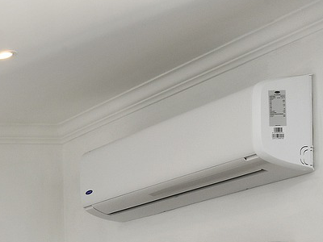
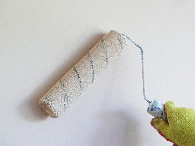

Aire Acondicionado
Somos especialistas en la instalación de aire acondicionado tanto en interior como en exterior. Contamos con un equipo
de técnicos de aire acondicionado expertos en instalaciones que realizarán la instalación y asesorarán con la mejor
solución para su hogar. Damos servicio en toda la Comunidad de Madrid.

Pintura
Nuestros pintores son expertos en realizar trabajos de pintura de pisos, viviendas, comunidades y locales.
Trabajan con pintura plástica, temple, decorativa, eliminación del gotelé, alisado de paredes y techos. Todos
pintores emplean pinturas de calidad de primeras marcas, como Valentine, para lograr un
resultado final de la pintura duradero y perfecto.